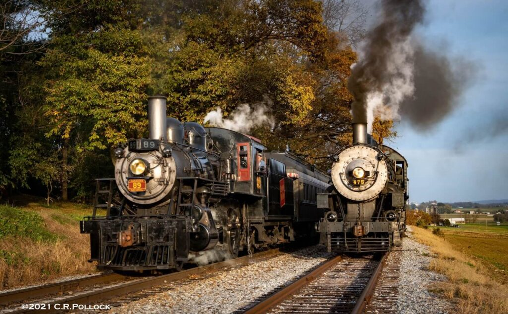
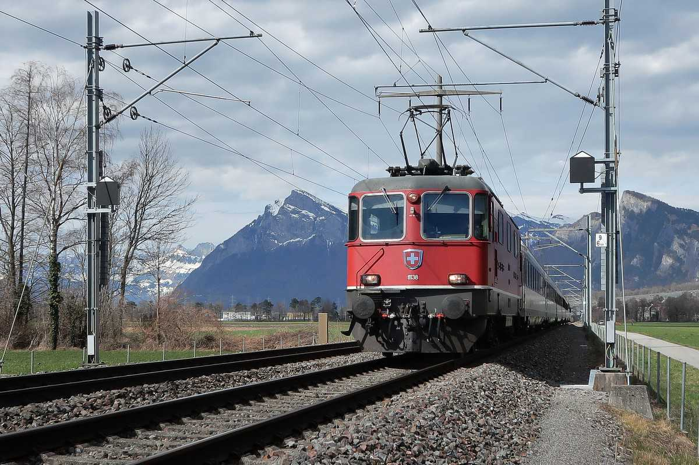
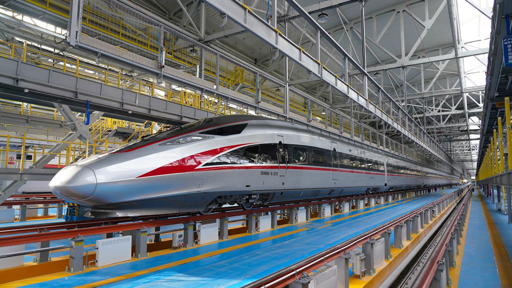
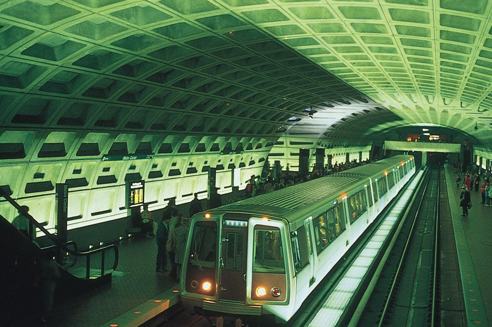

Types of Trains

Steam Train
A steam locomotive is a type of railway locomotive that produces its pulling power through a steam engine. These locomotives are fueled by burning combustible material – usually coal, wood, or oil – to produce steam in a boiler.
Electric Train
An electric train is a train powered by electricity from overhead lines, a third rail, or an on-board energy storage device such as a battery or a supercapacitor.
Bullet Train
A bullet train is a high-speed passenger train that operates in Japan. They are known for their sleek design, punctuality, and advanced technology.
Subway Train
A subway train, also known as a metro or underground train, is a train that runs on an underground railway track. It is commonly used for mass transit in urban areas.
